Деревня Лохино
Московская губерния
Звенигородский уезд
Павловская волость
«Знать, как жили предки, о чём думали, к чему стремились, современному человеку необходимо
хотя бы для того, чтобы в наш век формальной религиозности обрести понимание смысла собственного существования,
которое ко многим приходит через осознание своего места в череде поколений.»
Предисловие к книге О.Тянь-Шаньской «Жизнь Ивана»
 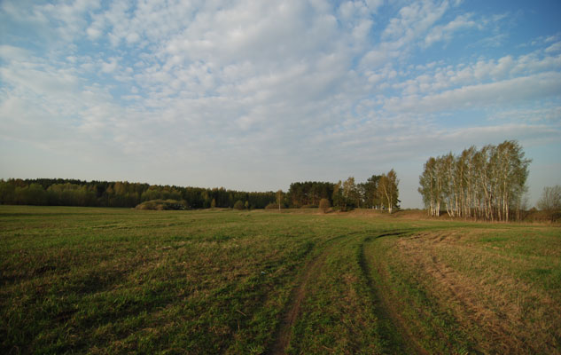
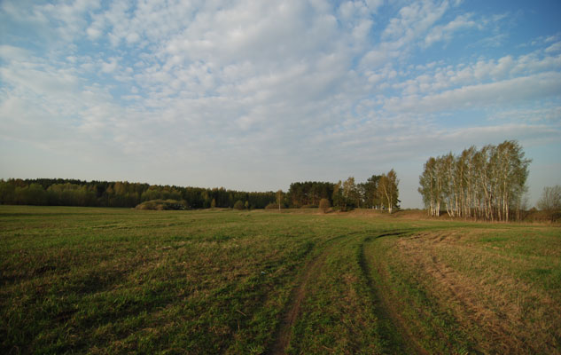
 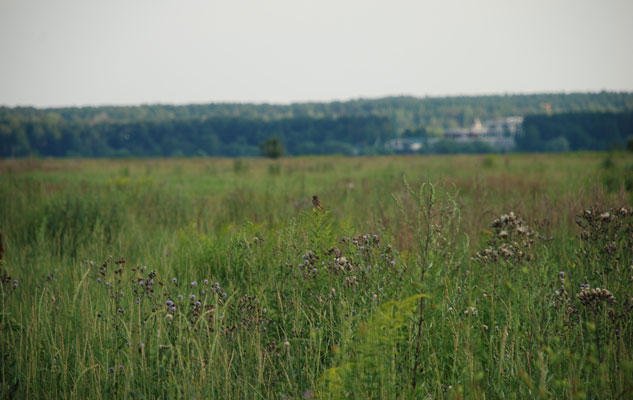
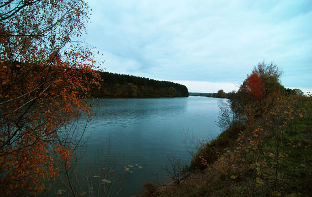
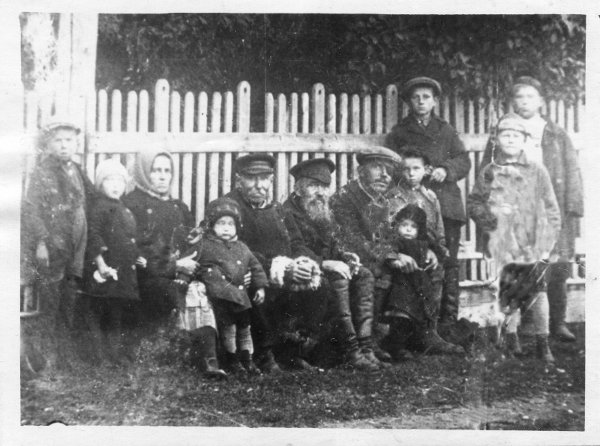
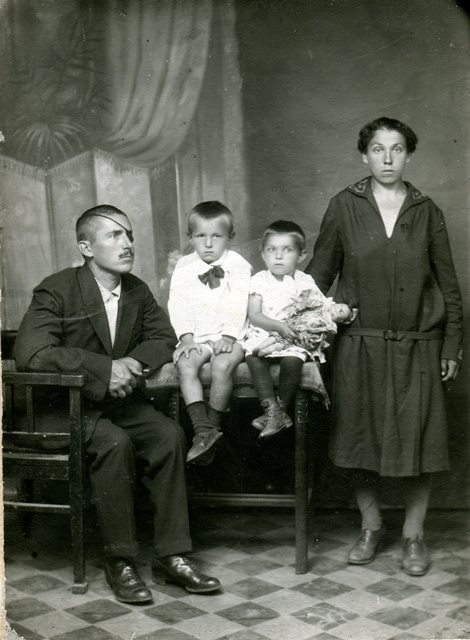
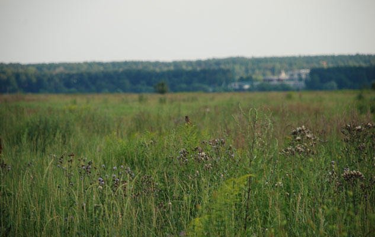
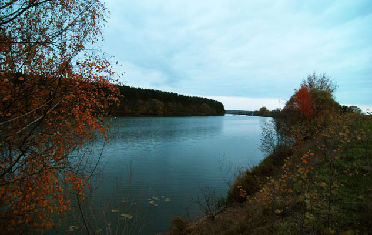
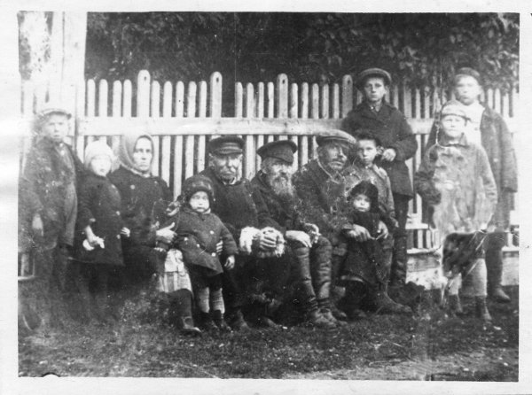
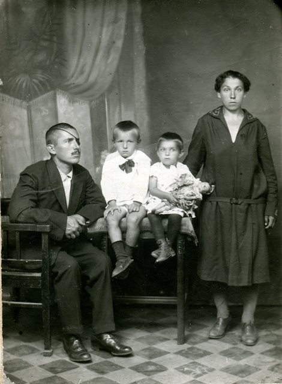

 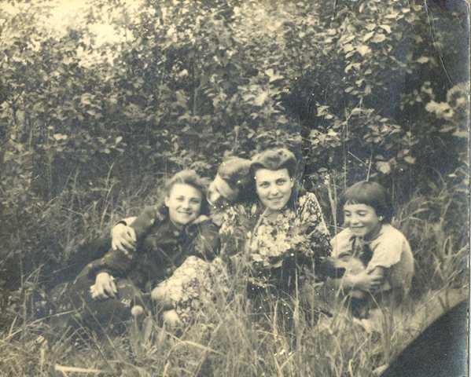
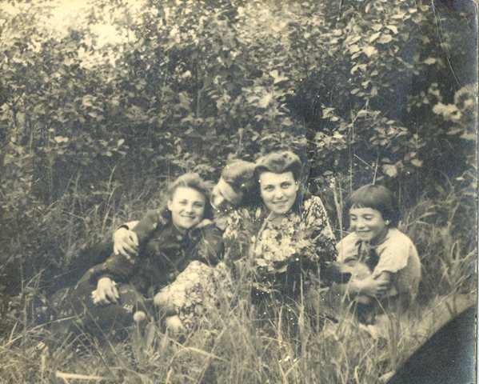


 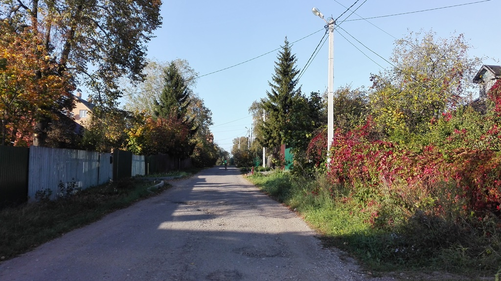
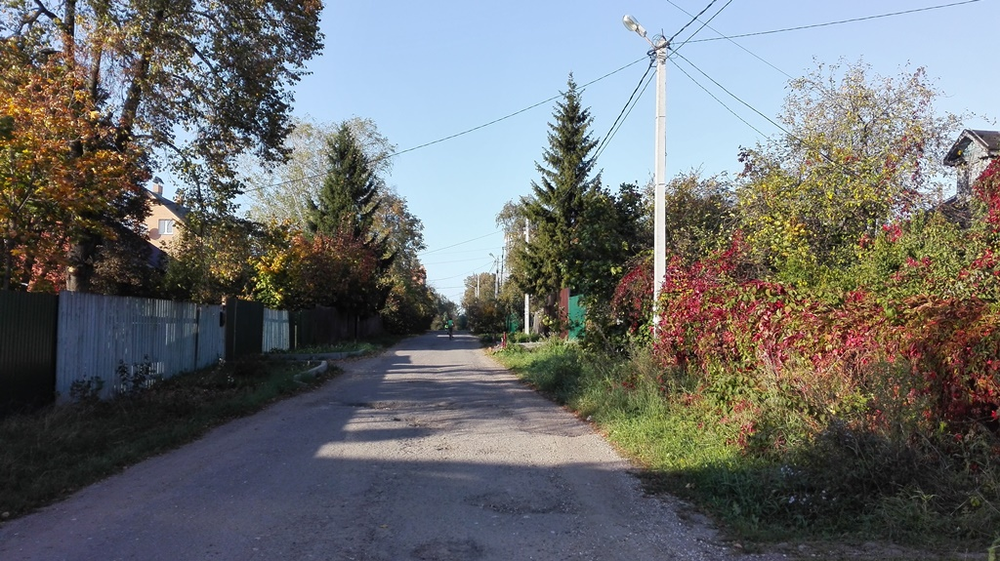


Лохино — деревня, стоявшая столетиями на правом берегу старого русла Москвы-реки напротив Усадьбы Архангельское.
Точное время основания деревни пока не установлено, но в историческом очерке М.П. Степанова «Село Ильинское» деревня упоминается в 1618 году в период Смутного времени.
На сто лет позже деревня упоминается в переписной книге помещичьих крестьян за 1709 год по Вяземскому стану. Книга рассказывает нам о том, что деревня Лохина числилась за князем Дмитрием Михайловичем Голицыным и проживало в ней 20 человек.
В 1810 году деревня Лохино вместе с усадьбой Архангельское была куплена князем Николаем Борисовичем Юсуповым (1750–1831). После чего начался расцвет и развитие усадьбы и её окрестностей.
С середины XIX века и до упраздения Московской Губернии деревня относилась к Павловской волости Звенигородского уезда, а с 1921 года Воскресенского уезда Московской губернии.
Зимой 1932–1933 года деревня была перенесена в Кунцевский район Подмосковья близ деревни Мамоново.
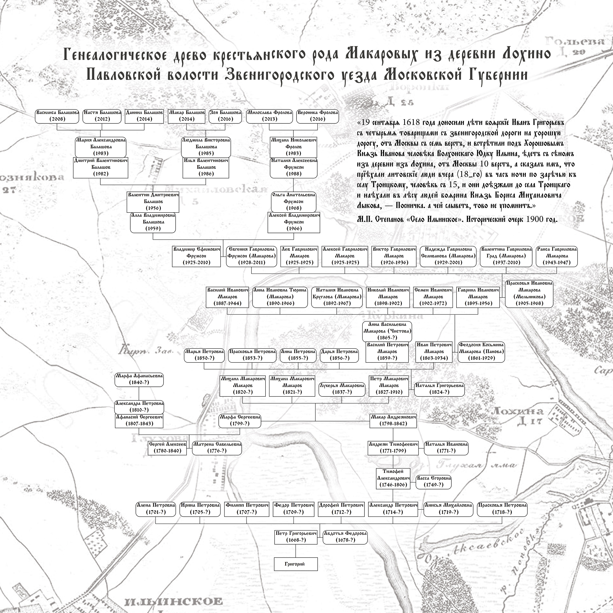
Генеалогическое древо
рода Макаровых
1618 год
Первое упоминание о деревне
в архивных источниках
400 лет
Возраст деревни
12 000 лет
Возраст реликтового озера Глухая яма, которое находится на острове

{kind=link}